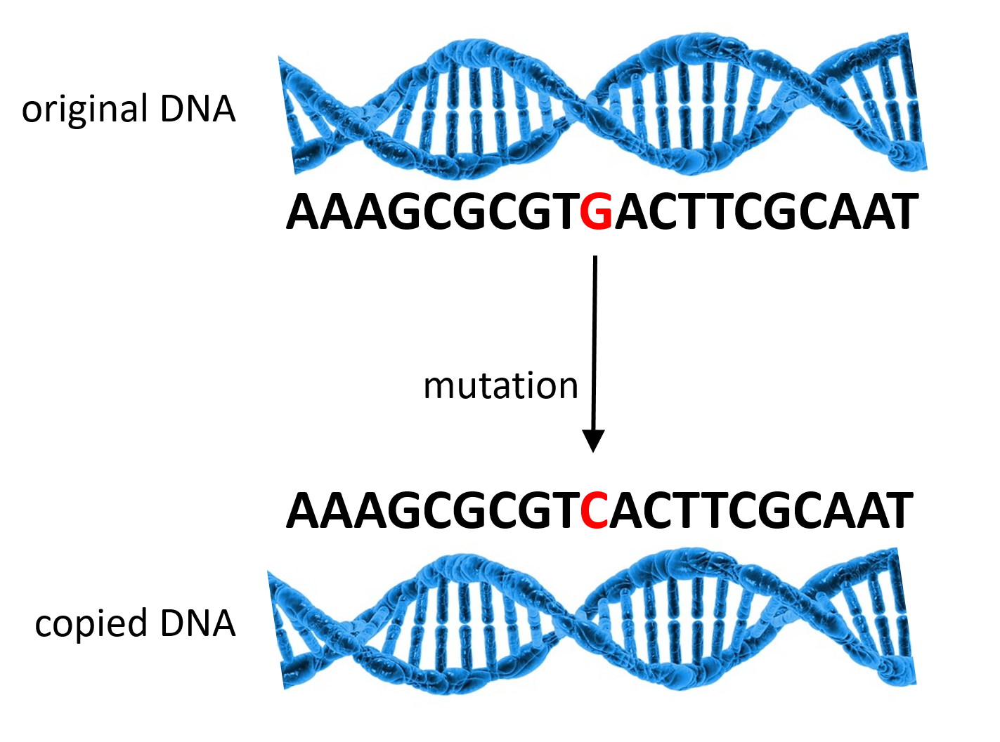
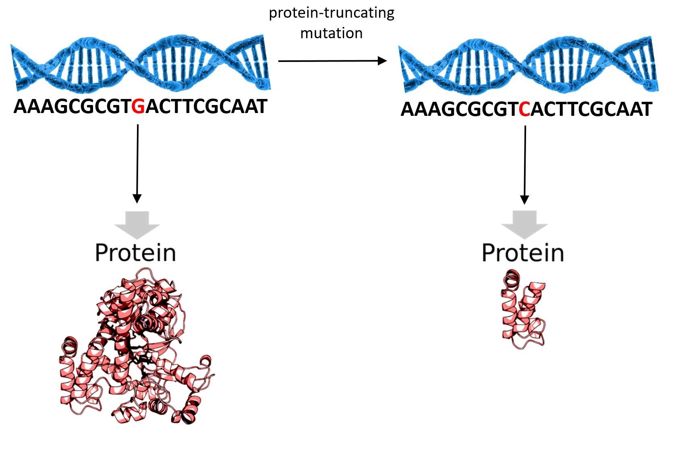

Imagine you’re a doctor walking into a hospital room to see your new patient, a 3-year old boy, for the very first time. Upon entering the room, you observe immediately that the boy’s facial structure is quite unusual: he has widely spaced eyes, a broad but short nose, and an unusually long mouth. The boy has severe dental problems, with teeth pointing in every direction. He’s shorter than most boys his age too, and his fingers are about half the typical length. As you begin talking with the boy and his mother, the boy seems quite cheerful and seems to have normal mental functioning for a child his age. But his mother tells you that her son’s been sick with a lung infection on and off for months now, and she’s worried about his unusual appearance and his delayed growth.
The boy’s symptoms aren’t quite like anything you’ve seen before — especially his abnormal facial morphology. You’ve got a few ideas of what might have caused these features, but after asking his mother some more questions, you rule out all the usual suspects. You're beginning to think the disease may be genetic, so you decide to order a clinical exome sequencing (more details on this later), which you hope will detect a genetic mutation causing your patient’s rare disease. You take a routine blood sample from the boy and send it to your team of scientists for analysis.
A few weeks later, your clinical bioinformatician comes back to you with the test results. She’s discovered 98 rare mutations in your patient! You’re shocked! No wonder this boy is developing abnormally. But hold on a second. The bioinformatician explains to you that an average person has around 100 rare mutations, so your patient isn’t out of the ordinary in this sense (2). So how can you tell which of these 98 mutations are causing the patient’s symptoms and differentiate them from up to 97 other less-serious mutations? You don’t have enough time to research every one of these mutations: you need a ranked list telling you which ones to explore first. Exasperated, you ask your bioinformatician to decide which of these mutations have the highest priority for follow-up, and she heads back to work.
Mutations affect genes. Intuitively, we’d expect mutations in certain genes are more likely to cause disease than mutations in other genes. So prioritizing this patient’s mutations requires knowledge about which mutations affect genes that are more essential for normal human development. Ideally, we’d like to cross-reference the boy’s mutations with a list of known mutations to see which of the boy’s mutations are most likely to have harmful effects. This raises the question, which of our genes can handle a few mutations, and which ones cause serious (or even deadly) effects when mutated? In other words, can we quantify how essential a human gene is?
First let’s refresh ourselves: what is a gene? Every human has about 20,000. And every cell in your body contains all of your genes in the form of DNA. Genes are the assembly instructions for proteins. Proteins are your body’s functional machinery, and they participate in everything you do, from getting out of bed in the morning to digesting your lunch. As you might guess, there are many different types of proteins, and each of your genes contains the code for one of these proteins.
Figure 1: A gene is a chunk of DNA that contains a blueprint for making proteins.1 (Image adapted from Thomas Shafee through Creative Commons 4.0)
Genes are extremely similar between humans – in fact, you and any random individual in the world are about 99.5% genetically identical (5). But even these small differences in your genes can cause major differences in your body. For example, they explain why you have wavy, curly, or straight hair. They also have medical consequences, explaining why some families are much more susceptible to diseases such as diabetes or heart disease than others.
The genetic variation that does exist originates through mutations. In order for us to grow and remain healthy, our cells also need to grow and divide, which requires copying DNA to make new cells. Our cells are nearly perfect at copying DNA, but occasionally they make a mistake, a mutation. It’s rare, but it happens. Most of the time these mutations are small and harmless, but occasionally they can have serious consequences.

Figure 2. The cell copies DNA during the process called DNA replication, but occasionally makes a mistake, a mutation. (Image adapted from Pixabay.)
Suppose one day you’re in the baking mood and decide to make some chocolate chip cookies from your mom’s favorite recipe. But you don’t know the recipe off the top of your head like your mom does, so you ask her to send you a copy. The recipe here is like DNA. It gives instructions for making the cookies, which are like a protein. Your Mom sends you her cookie recipe, but she gets distracted for a moment while she’s typing it out, so the recipe you print out calls for 5 cups of flour instead of 4 cups. Depending on how you like your cookies, this may or may not matter to you. But your recipe (DNA) now has a mutation, and it affects the cookies (protein).
How much variation can each of our genes tolerate? Do you really need every single one of your 20,000 genes to live, or are there 1, 10, even 100 that you could get by without? The Exome Aggregation Consortium (ExAC) attempted to answer these questions by collecting and sequencing the exomes of over 60,000 individuals (4, 7). (The exome is the specific part of your DNA that contains your genes.)2
Scientists in the consortium searched these 60,000 exomes for recurring patterns of mutation (4). Now, not all mutations have an equivalent effect on protein production. Some mutations don’t change the final product of the gene. However, the ExAC researchers specifically searched for a more serious type of mutation called a protein-truncating variant.3 A protein-truncating variant causes the cell’s machinery to stop producing a protein before it’s finished. The result of a protein-truncating variant is that the affected cells can’t produce any complete copies of the protein. In some cases, we’re perfectly fine without this protein. But in other cases, losing this protein can have drastic negative effects.

Figure 3. When a gene contains a protein-truncating mutation, the protein it produces is much smaller, and usually not functional. (Image adapted from Pixabay and from Thomas Shafee through Creative Commons 4.0)
Let’s go back to the cookie-baking example. You’ve mixed together the butter, sugar, and eggs…and the recipe ends there. Bon appetit! You have a final product, but it’s nothing like your mom’s cookies. It turns out that the rest of the recipe was there all along, but it printed out on a separate sheet that you never saw, so you got confused and stopped in the middle of the recipe. That’s what happens when your DNA contains a protein-truncating variant. The cells keep on happily making something, but it’s not the fully functional protein product that they should be making.
The ExAC scientists observed that some genes were frequently mutated across individuals, while others almost never had mutations in any individuals. Could this mean that the frequently mutated genes are more difficult for the cell machinery to copy correctly? It turns out that’s not the case.4 There must be another explanation for why mutations are much more prevalent in some genes than in others.
Time for a story. Let’s fly back to the height of World War II. Researchers in a top-secret American operation were tasked with the problem of armoring the military’s airplanes as efficiently as possible. They studied planes that had returned from battle and observed that the concentration of bullet holes was highest on the wings, with only sparse bullet holes around the engine and fuel system. With this knowledge, the task force proposed placing heavy armor on the wings.
They asked a mathematician named Abraham Wald to calculate how much extra armor was optimal for the wings. However, Wald surprised them with a clever observation: the planes they were studying were the ones that had made it back from battle. Since planes are a hard target, they're about equally likely to be shot anywhere. However, it's very possible for planes to survive a wing shot, but nearly impossible for them to survive an engine shot — those planes shot in the engines had never even made it back for analysis. It was the engines and fuel tanks that needed the extra armor!5
Now let’s consider that some genes may be more essential than others for survival. Sometimes a mutation arises in an absolutely essential gene. Unfortunately, an individual with this type of mutation won’t even survive until birth, because the consequences of losing the associated proteins are just too severe. A protein that signals to the cell when it’s time to divide might fall in this category: if your cells can’t divide, then you can’t develop into an adult human being. Other times, a mutation occurs in a gene that is “somewhat essential”: people can live without these genes, but it reduces their chances of survival. For example, protein-truncating variants in a gene called dystrophin can cause Duchenne muscular dystrophy, which causes muscle loss in boys6 starting at a young age (5). And in some cases, a mutation occurs in a gene that’s non-essential. Like the relatively lucky pilots whose planes were shot only in the wings, these individuals are the most likely to survive and pass their genes down to future generations.7
Over many generations, more and more members of the population develop mutations in the non-essential genes. However, the essential genes remain mutation-free within the population because individuals possessing those mutations don’t survive long enough for us to observe them. Therefore, when we sequence the exomes of a large population, we find that the genes with the fewest mutations across individuals are the most essential, and the genes with the most mutations are the least essential. This is the rationale the ExAC scientists used for identifying essential genes.
For each gene, ExAC scientists computed the average number of protein-truncating variants in that gene across individuals. Based on these results, they used an expectation-maximization algorithm to assign a score to each gene measuring its level of intolerance to protein-truncating variants (4).
We normally have two functional copies of each gene - one from our mother and one from our father. When a person has protein-truncating variants in both copies, called a homozygous mutation, there’s no backup mechanism for producing the protein. The other possibility is a heterozygous protein-truncating variant; in this case a person has one dysfunctional copy of the gene and one functional copy. The person’s cells still produce that protein, but less of it.
ExAC scientists found that the average person has about 35 homozygous protein-truncating variants, spread out across multiple genes. In other words, almost 35 of the 20,000 genes in each human’s “recipe” are completely broken — and therefore not essential (or else these people wouldn’t still be alive!). The average individual in ExAC also had 2 protein-truncating variants that were singletons, meaning not a single other person in the group of 60,000 possessed the exact same mutation. Luckily, these singleton mutations were typically not homozygous. So a typical person has a few extremely rare differences in his or her “recipe”, but these differences just reduce the quantity of an ingredient (protein) rather than eliminating it altogether. The main takeaway: not all genes are completely essential, and we’re able to tolerate reduced quantities or even complete absence of many different proteins.
However, ExAC also found that 3,230 genes had hardly any protein-truncating variants. Over 15% of our genes fall in this absolutely essential category. For the rest of our genes, there may be consequences to losing them, but they’re not so essential that we can’t live without them.
Now let’s return to the hospital, where your 3-year old patient and his mother are awaiting his test results. For each mutation, your bioinformatician has reported the gene in which the mutation occurred. And for each gene, she’s also reported its “intolerance to loss of function” score from ExAC. By now, you know that genes with high intolerance scores are more essential, meaning they’re more likely to cause severe problems when mutated. So you prioritize the list of mutations by their intolerance score, from highest to lowest.
You don’t expect that your patient has any protein-truncating variants in absolutely essential genes, since your patient is surviving, albeit unhealthy. But you do find that the top mutation on your list is in the gene ROR2, which falls in the somewhat essential bucket of genes.8 From a quick Internet search, you learn that ROR2 mutations cause an extremely rare disease called Robinow syndrome that has only ever been documented in 200 patients. Despite the rarity of this illness, your patient’s symptoms match the disease description remarkably well! Excited, you tell the boy’s mother that you’ve discovered what’s causing his symptoms. Although the disease is not curable, you can ameliorate his symptoms using a combination of growth hormone therapy and surgery (to correct skeletal abnormalities) (1), and this will allow him to live a relatively normal life.9
What’s next for the ExAC Consortium? Even as the ExAC scientists analyzed the last of the 60,000 exomes, they were still finding plenty of previously undiscovered mutations. This implies that there is still much to be learned from sequencing an even wider set of human exomes. A second phase of the project is now underway. This phase will double the number of sequenced exomes for a total of 120,000, providing us with a deeper understanding of the mutations that affect human genes and proteins.
The processed results of the ExAC study are publicly available data, and can be viewed in a user-friendly browser. For more information, check out the flagship paper, Daniel MacArthur’s blog summary, and this News and Views piece in Nature.
Bacino, C. (2011). ROR2-related Robinow syndrome.
Dewey, F. E., Grove, M. E., Pan, C., Goldstein, B. A., Bernstein, J. A., Chaib, H., ... & Quertermous, T. (2014). Clinical interpretation and implications of whole-genome sequencing. JAMA, 311(10), 1035-1045.
Hodgkinson, A., & Eyre-Walker, A. (2011). Variation in the mutation rate across mammalian genomes. Nature Reviews Genetics, 12(11), 756-766.
Lek, M., Karczewski, K., Minikel, E., Samocha, K., Banks, E., Fennell, T., ..., MacArthur, D., & Exome Aggregation Consortium. (2016). Analysis of protein-coding genetic variation in 60,706 humans. Nature, 536, 285-291.
Levy, S., Sutton, G., Ng, P. C., Feuk, L., Halpern, A. L., Walenz, B. P., ... & Venter, J. C. (2007). The diploid genome sequence of an individual human. PLoS Biol, 5(10), e254.
Roberts, R. G., Bobrow, M., & Bentley, D. R. (1992). Point mutations in the dystrophin gene. Proceedings of the National Academy of Sciences, 89(6), 2331-2335.
Shendure, J. (2016). Human genomics: A deep dive into genetic variation. Nature, 536(7616), 277-278.
Making proteins requires an intermediary called RNA (ribonucleic acid). That process is called transcription, but we won't discuss it in this post. ↩
Genes are only a small part of your DNA! The rest of your DNA, called noncoding DNA, also contains a whole lot of other regulatory and structural information, and understanding how the human body processes this information is a major objective of modern genomics research. ↩
A mutation is a biological event that creates a variant, sometimes also called a polymorphism. The distinction between a mutation and a variant isn’t well-defined; within this blog post you can think of them as the same thing. ↩
Geneticists often assume that new mutations due to DNA copying errors are about equally likely to occur anywhere in the genome. This isn’t entirely true (3), but the differences in mutation rates across genes aren’t great enough to explain why some genes have so many more mutations than others. ↩
The task force’s initial proposal was an example of survivorship bias. ↩
Duchenne muscular dystrophy is more common in boys because the dystrophin gene is on the X chromosome. Girls have two X chromosomes, so even if they have one dysfunctional copy of the gene, they’ve still got a backup, so they’ll be just fine. But boys only have one X chromosome. If a boy has a dysfunctional dystrophin gene, he’s almost sure to develop muscular dystrophy. ↩
Not all mutations are passed down to offspring. The ExAC scientists were mainly interested in germline mutations — mutations in egg or sperm cells, which are passed on one’s children. Another type of mutation, called a somatic mutation, develops only in other cells of the body and can cause diseases such as cancer, but isn't passed on. ↩
Check out the ExAC browser entry for ROR2. On the right-hand side of the page, you’ll see a table with the entry “pLI = 0.46.” pLI stands for “probability of loss intolerance”, and this is the score that was described earlier in this blog. pLI scores range from 0 (non-essential) to 1 (absolutely essential). Genes with pLI scores between 0.1 and 0.9 are our somewhat essential genes: they cause problems when mutated, but aren’t usually essential for survival. ↩
Although this example is fictional, exome and genome sequencing have already been used in some clinical settings (2), and many doctors and scientists hope that in the near future, it will become a routine procedure and will allow more individualized treatment of disease. ↩
{kind=link}